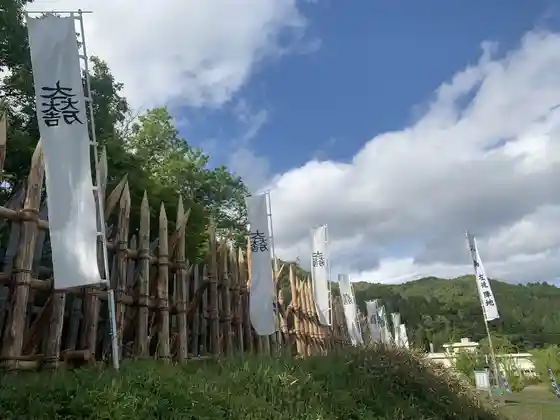
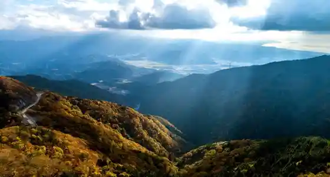
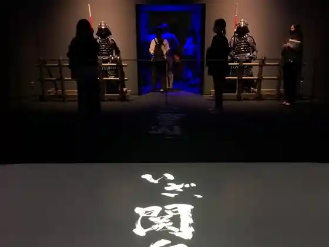
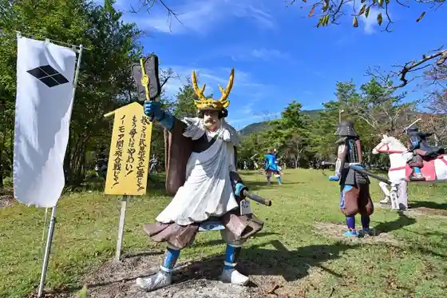

Sekigahara Kosenjo
Sekigahara, Gifu · 0584-43-1112 · Official / source link

Ibukiyama Doraibuei
Sekigahara, Gifu · 0584-43-1155 · Official / source link

Gifu Sekigahara Kosenjo Memorial Museum
Sekigahara, Gifu · 0584-47-6070 · Official / source link

Sekigahara Uo Land
Sekigahara, Gifu · 0584-43-1177 · Official / source link

Ibukiyama Doraibuei Aki no Autumn Leaves
Sekigahara, Gifu · 0584-43-1155 · Official / source link
Tokugawaieyasu Saigo Jin'ato Shogi Ba
Sekigahara, Gifu · Official / source link
Sekigahara Kosenjo Kessen Chi
Sekigahara, Gifu · Official / source link
Otani Yoshitsugu Kensho Hi
Sekigahara, Gifu · Official / source link
Sekigahara Wa Kasa Monogatari
Sekigahara, Gifu · 0584-43-1177 · Official / source link
Sekigahara Sasao Yamako Ryu Kan
Sekigahara, Gifu · 0584-43-1600 · Official / source link
Sekigahara Limestone Cave
Sekigahara, Gifu · 0584-43-0092 · Official / source link
Sasao Yama Ishida Mitsunari Jin'ato
Sekigahara, Gifu · Official / source link
Goma no Sato
Sekigahara, Gifu · 0584-41-0130 · Official / source link
Sekigahara Ekimae Kanko Koryu Kan ” Iza Sekigahara !”
Sekigahara, Gifu · 0584-43-1100 · Official / source link
Myo Tera
Sekigahara, Gifu · 0584-43-5141 · Official / source link
Hosokawa Tadaoki Jin'ato
Sekigahara, Gifu · Official / source link
Momokubari Yama Tokugawaieyasu Saisho Jin'ato
Sekigahara, Gifu · Official / source link
Sekigahara Kosenjo Kaisen Chi
Sekigahara, Gifu · Official / source link
Otani Yoshitsugu no Haka Yuasa Go Jo no Haka
Sekigahara, Gifu · Official / source link
Matsudaira Chukichi Ii Naomasa Jin'ato
Sekigahara, Gifu · Official / source link
Otani Yoshitsugu Jin'ato
Sekigahara, Gifu · Official / source link
Matsuo Yama Castle Ruins Kobayakawa Hideaki Jin'ato
Sekigahara, Gifu · Official / source link
Sekigahara Rekishi Minzokugaku Shu Kan
Sekigahara, Gifu · 0584-43-2665 · Official / source link
Shimazu Yoshihiro Jin'ato < Shimazu no Shirizoki Kuchi Yukari no Chi >
Sekigahara, Gifu · Official / source link
Kuroda Nagamasa Takenaka Shigekado Jin'ato / Okayama (Maruyama) Hoka Ba
Sekigahara, Gifu · Official / source link
Sekigahara De Saikuringu Dendo Ashisuto Tsuki Jitensha Rentaru
Sekigahara, Gifu · 0584-43-1100 · Official / source link
Sekigahara Myojin Forest
Sekigahara, Gifu · 0584-43-3054 · Official / source link
Higashi Kubizuka
Sekigahara, Gifu · Official / source link
Yamauchi Kazutoyo Jin'ato
Sekigahara, Gifu · Official / source link
Shima Sakon Jin'ato
Sekigahara, Gifu · Official / source link
Guriin Uddo Sekigahara Oto Campground
Sekigahara, Gifu · 0584-41-0033 · Official / source link
Sekigahara Shiseki Gaido
Sekigahara, Gifu · 0584-43-1139 · Official / source link
Honda Tadakatsu Jin'ato
Sekigahara, Gifu · Official / source link
Nanten Manzan Ukita Hideie Jin'ato
Sekigahara, Gifu · Official / source link
Hijiri Hasu Tera no Hachi Bo Ume
Sekigahara, Gifu · 0584-43-5500 · Official / source link
Tanaka Yoshimasa Jin'ato
Sekigahara, Gifu · Official / source link
Fukushima Seisoku Jin'ato
Sekigahara, Gifu · Official / source link
Hokuten Manzan Konishi Yukinaga Jin'ato
Sekigahara, Gifu · Official / source link
Hiratsuka Tame Ko Hi
Sekigahara, Gifu · Official / source link
Nishi Kubizuka
Sekigahara, Gifu · Official / source link
Satsuma Ike < Shimazu no Shirizoki Kuchi Yukari no Chi >
Sekigahara, Gifu · Official / source link
Todo Takatora Kyogoku Kochi Jin'ato
Sekigahara, Gifu · Official / source link
Sekigahara Maburukurafuto
Sekigahara, Gifu · 0584-43-2000 · Official / source link
Wakisaka Yasuji Jin'ato
Sekigahara, Gifu · Official / source link
Fuji Furukawa no Hotaru
Sekigahara, Gifu · 0584-43-1600 · Official / source link
Sekigahara Oshi Torippu - Shiru Tabi
Sekigahara, Gifu · Official / source link
Okudaira Teiji no Haka
Sekigahara, Gifu · Official / source link
Sekigahara Oshi Torippu - Osu Tabi
Sekigahara, Gifu · Official / source link